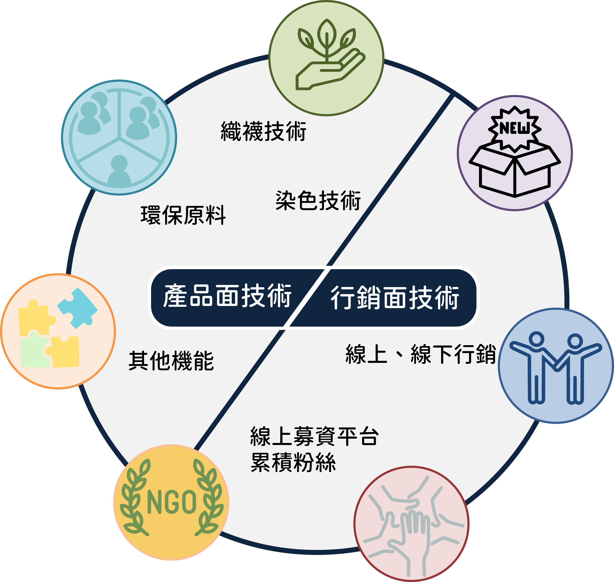
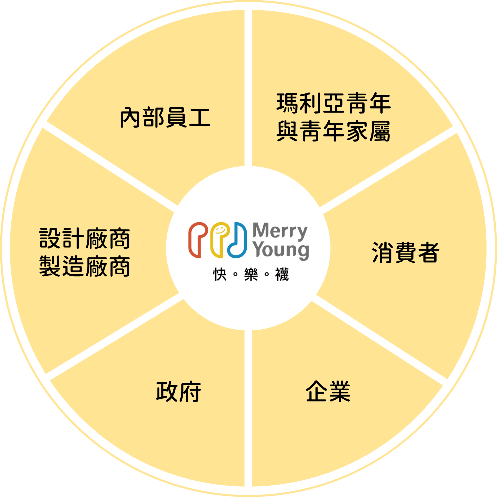
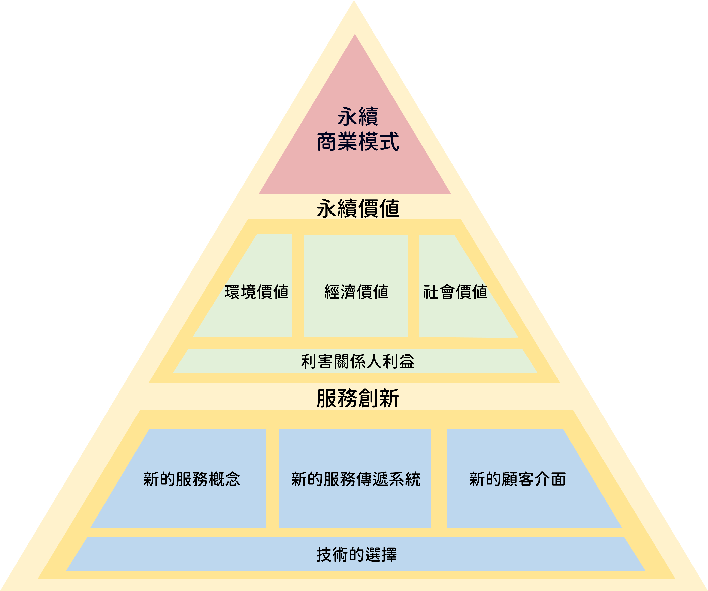

碩士論文｜非營利組織社會企業化之永續商業模式
The Sustainable Business Model of Social Entrepreneurship for Non-Profit Organizations
以 Merry Young 快樂襪為例
研究背景與動機
非營利組織普遍面臨資金短缺、難以規模化營運。本研究關注非營利組織如何透過發展社會企業，實踐永續經營與社會影響力。
研究目的與問題
- 在資源有限情況下，採取哪些創新服務策略實現社會創業？
- 社會企業角色如何影響組織與市場？
- 如何兼顧社會責任、獲利與永續？
研究方法
以 Merry Young 為研究對象，採用質性研究進行半結構式訪談，搭配文獻回顧、商業模式圖與價值主張圖進行分析。
研究結果與討論
- 導入市場導向與跨界合作，提升組織獲利與品牌識別
- 社會價值與營運策略並進，落實經濟與社會雙重目標
- 持續透過創新與反思優化社會企業營運機制
結論與建議
- 非營利組織可透過社會企業化達成財務與社會影響力平衡
- 應強化品牌經營、利害關係人連結與永續規劃
- 政府與大眾可提供支持與平台促進社會企業發展
圖片參考


